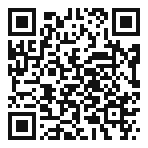
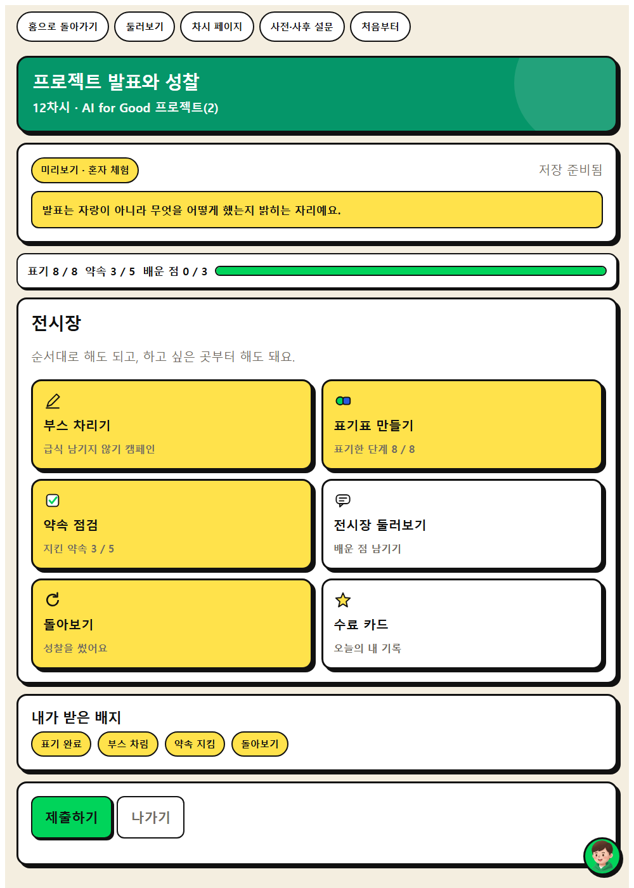
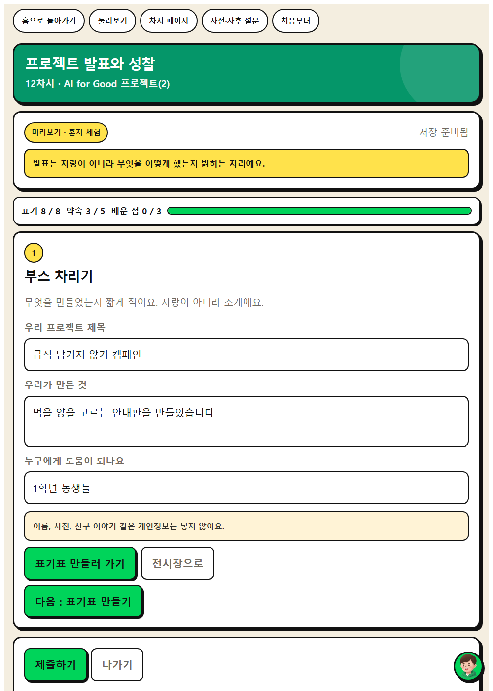
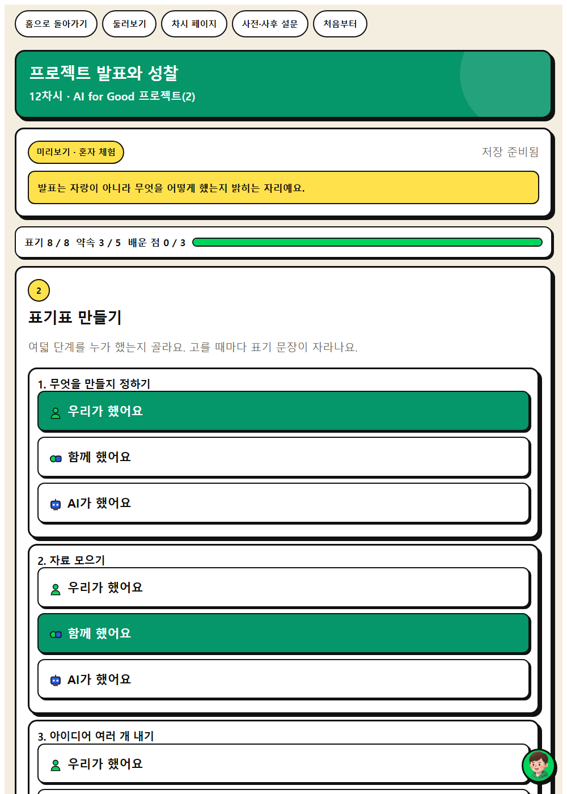
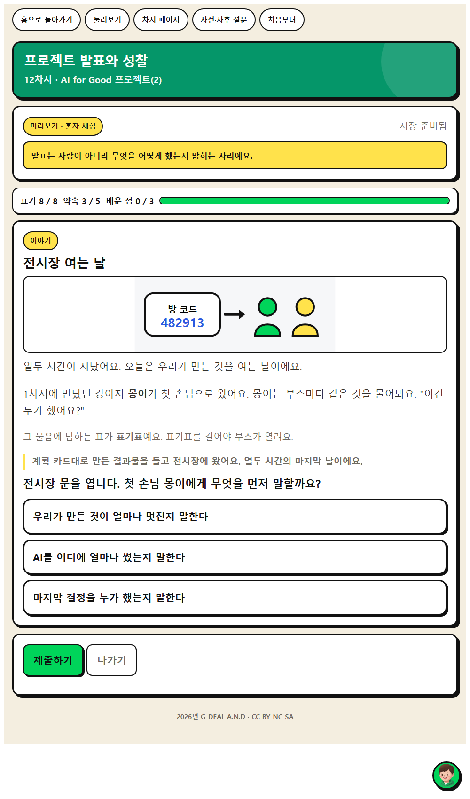
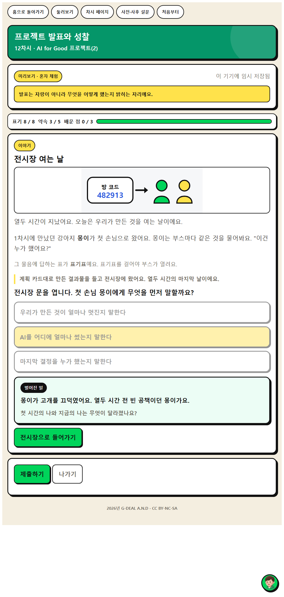

해결 결과물을 만들어 발표하고 12차시를 돌아봅시다.




상황을 읽고 보기 셋 가운데 하나를 고릅니다. 고르면 바로 답이 나오지 않고 1.6초 기다립니다. 그 틈이 생각하는 자리입니다. 결과가 열린 뒤에도 0.9초가 지나야 넘어가는 단추가 생깁니다.
옳고 그름을 매기지 않습니다. 어느 보기를 골라도 막히지 않고, 고른 대로 다른 일이 벌어질 뿐입니다. 판단이 갈린 자리를 수업에서 다시 꺼내 주세요.
화면을 옮길 때도 0.7초 기다립니다. 고장이 아닙니다. 급한 학생은 기다리는 화면을 한 번 더 누르면 바로 넘어갑니다.


| 시각 | 단계 | 시간 | 무엇을 하나 |
|---|---|---|---|
| 0분 ~ 5분 | 도입 | 5분 | 동기 유발 |
| 5분 ~ 15분 | 전개 1 | 10분 | [활동 1] 결과물 완성하기 |
| 15분 ~ 25분 | 전개 2 | 10분 | [활동 2] 발표하고 활용 과정 설명하기 |
| 25분 ~ 35분 | 전개 3 | 10분 | [활동 3] 12차시 돌아보기 |
| 35분 ~ 40분 | 정리 | 5분 | 배움 정리 |
| 중점 역량 | 지식·이해 | 과정·기능 | 가치·태도 |
|---|---|---|---|
| 사회·관계적 사고 | AI를 활용하여 지역 사회 문제 해결에 기여할 수 있다. | 사람과 AI의 역할을 나누어 결과물을 제작하고 발표하기 | 공동체 가치 구현에 기여하려는 자세 |
| 성찰적 사고 | 결과물의 근거와 AI 활용 범위를 스스로 설명할 수 있어야 내 결과물이다. | 12차시 동안의 변화를 점검하고 다음 계획을 세우기 | AI가 함께하는 사회에서 자신의 역할을 성찰하려는 자세 |
보조 역량 : 주체성
| 단계 | 학습 내용 | 교사 발문과 예상 답변 |
|---|---|---|
| 도입 5분 | 동기 유발 | 교사지난 시간에 세운 계획을 다시 확인해 봅시다. 무엇부터 하면 될까요? 학생모은 사진에 라벨을 붙이는 일부터 하면 됩니다. |
| 학습 문제 확인 | 교사해결 결과물을 만들어 발표하고 12차시를 돌아봅시다. | |
| 준비물과 유의점 | 준비물11차시 설계도 있으면 좋은 것발표 자료 양식 유의할 점모둠별 진행 상황 미리 점검 | |
| 전개 30분 | [활동 1] 결과물 완성하기 | 웹앱 부스 차리기 교사계획한 순서대로 결과물을 완성해 봅시다. 학생분리배출 안내판과 간단한 분류 모델을 만들었습니다. |
| [활동 2] 발표하고 활용 과정 설명하기 | 웹앱 표기표 만들기 교사결과물과 함께 AI를 어디에 어느 정도 썼는지 설명해 봅시다. 학생사진 분류는 AI가 했고, 어떤 항목을 넣을지는 우리가 정했습니다. 교사우리 반 약속 중 어떤 조항을 지켰나요? 학생개인정보를 넣지 않는다는 조항과 활용 사실을 밝힌다는 조항입니다. | |
| [활동 3] 12차시 돌아보기 | 웹앱 약속 점검 교사첫 시간과 지금, AI에 대한 내 생각은 어떻게 달라졌나요? 학생예전에는 편한 도구라고만 생각했는데 지금은 확인이 필요한 도구라고 생각합니다. 교사사후 설문에 솔직하게 답해 봅시다. 학생가장 잘 지킨 조항과 가장 어려웠던 조항을 적었습니다. | |
| 준비물과 유의점 | 준비물웹앱 프로젝트 발표와 성찰, 공통 웹앱 사후 설문 있으면 좋은 것캔바 유의할 점결과물의 완성도보다 판단 과정을 평가 유의할 점발표가 어려운 학생은 모둠 대표 설명으로 대체 가능 | |
| 정리 5분 | 배움 정리 | 교사12차시를 한 문장으로 정리해 봅시다. 학생AI는 제 생각을 도와주는 도구이고, 마지막 결정은 제가 합니다. |
| 실천 다짐 | 교사우리 반 AI 약속을 학기 끝까지 어떻게 점검할까요? 학생한 달에 한 번 함께 읽고 고칠 부분을 정하기로 했습니다. | |
| 준비물과 유의점 | 준비물프로젝트 결과물, 성찰문 유의할 점약속 점검 일정을 학급 달력에 표시 |
프로젝트 발표와 성찰 · 결과물 부스를 차리고 표기표를 만듭니다. 프로젝트를 만든 여덟 단계를 우리·함께·AI로 나누면 표기 문장이 자라나고, 마지막 결정을 AI로 두면 화면이 되묻습니다.
| 순서 | 화면 | 시간 | 학생이 하는 일 |
|---|---|---|---|
| 1 | 이야기 | 열두 시간을 마무리하는 전시가 열립니다. 읽고 나서 "전시장 문을 엽니다. 첫 손님 몽이에게 무엇을 먼저 말할까요?" 보기 세 개 가운데 하나를 고릅니다. 고르면 바로 답이 나오지 않고 잠깐 뜸을 들인 뒤 벌어진 일이 열립니다. 옳고 그름을 매기지 않습니다. 교사전시장 문을 엽니다. 첫 손님 몽이에게 무엇을 먼저 말할까요? | |
| 2 | 전시장 | 오늘 할 일을 한눈에 봅니다. | |
| 3 | 부스 차리기 | 우리 모둠 결과물을 소개하는 부스를 꾸립니다. | |
| 4 | 표기표 만들기 | 프로젝트를 만든 여덟 단계를 우리·함께·AI로 나눕니다. 마지막 결정을 AI로 두면 화면이 되묻습니다. | |
| 5 | 약속 점검 | 우리 반 약속 가운데 어떤 조항을 지켰는지 표시합니다. | |
| 6 | 전시장 둘러보기 | 다른 모둠 부스를 돌아봅니다. | |
| 7 | 돌아보기 | 첫 시간과 지금 내 생각이 어떻게 달라졌는지 적고 사후 설문으로 이어집니다. |
활동지에도 같은 예시가 실려 있습니다. 무엇을 쓰는지 먼저 보여 준 뒤 학생이 자기 말로 바꾸게 합니다.
| 활동지 칸 | 학생 작성 예시 |
|---|---|
| 1. 완성한 결과물 | 분리배출 안내판과 간단한 분류 모델을 만들었습니다. |
| 2. AI가 한 일 / 우리가 한 일 | 사진 분류는 AI가 했고, 어떤 항목을 넣을지는 우리가 정했습니다. |
| 3. 지킨 약속 조항 | 개인정보를 넣지 않는다는 조항과 활용 사실을 밝힌다는 조항입니다. |
| 4. 12차시 성찰문 | 예전에는 편한 도구라고만 생각했는데 지금은 확인이 필요한 도구라고 생각합니다. |
| 이런 일이 생기면 | 이렇게 합니다 |
|---|---|
| 발표가 결과물 자랑으로 흐른다 | 어디에 AI를 썼는지 한 가지만 반드시 말하게 합니다. |
| 마지막 결정을 AI로 표기한다 | 화면이 되묻습니다. 그 자리에서 누가 정했는지 다시 이야기합니다. |
| 기기가 모자란다 | 모둠에 한 대만 두고 기록 담당을 정합니다. 판단은 모둠이 함께 하고 입력만 한 사람이 합니다. |
| 인터넷이 끊긴다 | 쓰던 내용은 그 기기에 남습니다. 활동지에 먼저 쓰게 하고 연결이 돌아오면 제출합니다. |
| 역량 | 잘함 | 보통 | 도움 필요 |
|---|---|---|---|
| 사회·관계적 사고 | 결과물에서 AI가 한 일과 우리가 한 일을 갈라 발표한다. | 발표는 하지만 AI를 쓴 자리를 뭉뚱그린다. | 표기표를 함께 보며 한 단계씩 짚어 말한다. |
| 성찰적 사고 | 첫 시간과 견주어 내 생각이 어떻게 달라졌는지 구체적으로 적는다. | 달라졌다고 적지만 무엇이 달라졌는지 흐릿하다. | 첫 시간 기록을 함께 꺼내 보며 견주어 본다. |
| 성취기준 | [6실05-03] 연계 (창의적 체험활동) |
|---|---|
| 학생 산출물 | 프로젝트 결과물, 활용 과정 설명서, 12차시 성찰문 |
| 평가 방법 | 산출물 평가, 구술 평가 |
| 수업 도구 | 발표 자료, 캔바 |
인간중심 사고를 기르는 AI적정활용 수업 WISE · 2026년 G-DEAL A.N.D · CC BY-NC-SA